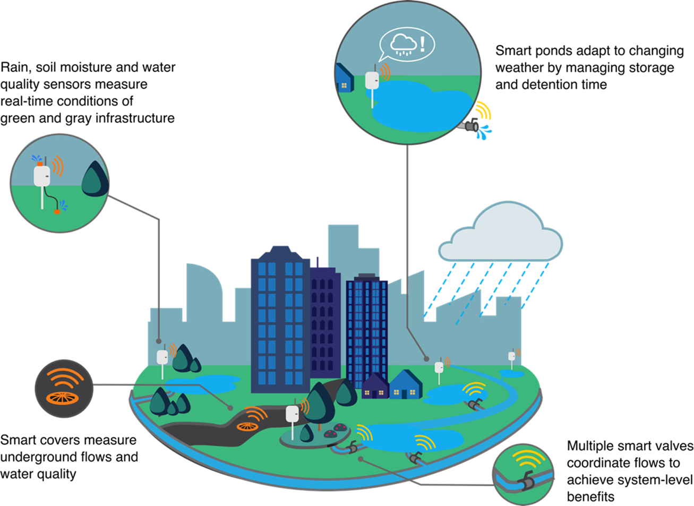
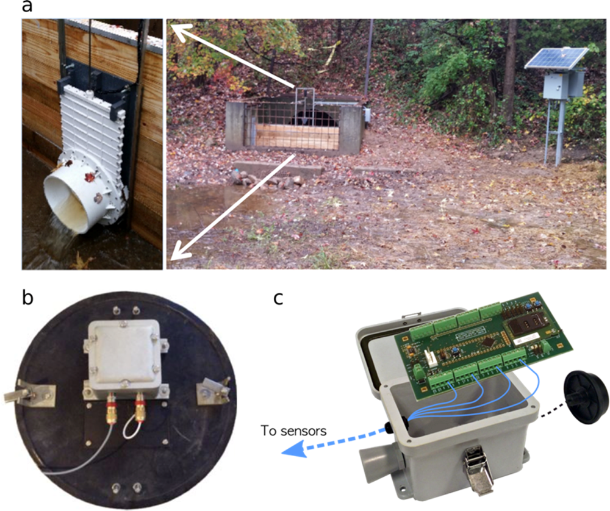
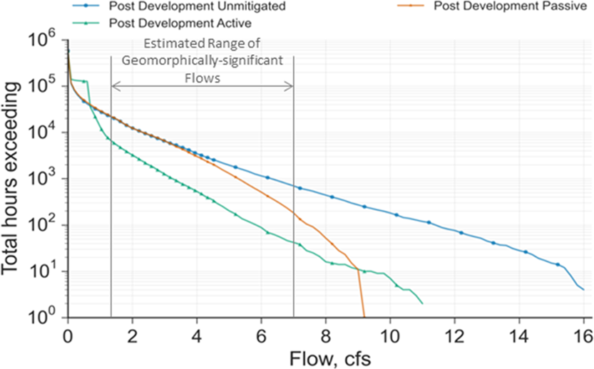
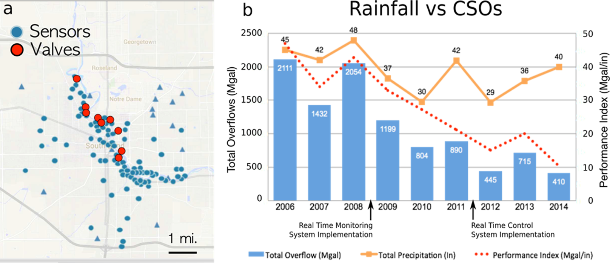

Smarter Stormwater Systems
[doi] stormwater-managementreal-time-controlurban-water-qualityinternet-of-thingsgreen-infrastructuresmart-cities
Smarter Stormwater Systems
Authors: Branko Kerkez, Cyndee Gruden, Matthew Lewis, Luis Montestruque, Marcus Quigley, Brandon Wong, Alex Bedig, Ruben Kertesz, Tim Braun, Owen Cadwalader, Aaron Poresky, Carrie Pak Year: 2016 Tags: stormwater-management, real-time-control, urban-hydrology, iot-sensors, green-infrastructure, water-quality
TL;DR
Retrofitting existing gray and green stormwater infrastructure with low-cost sensors and actuators can transform static systems into adaptive ones that respond to individual storm events in real time. The paper synthesizes pilot evidence from individual basin studies to a city-scale combined sewer deployment, and identifies governance, uncertainty, and sensor-technology gaps blocking broader adoption.
First pass — the five C's
Category. Position/feature article — synthesizes existing pilot results and frames a research agenda; not a primary experimental study.
Context. Urban stormwater management and green infrastructure (GI) subfield. Builds on: Gaborit et al. (real-time control of detention basins using rainfall forecasts), Muschalla et al. (ecohydraulic-driven RTC and particle-removal simulation), Montestruque & Lemmon (South Bend agent-based distributed control architecture), Petrucci et al. (question of whether local source-control benefits aggregate at watershed scale).
Correctness. Load-bearing assumptions: (1) commercially available sensors and actuators are sufficiently reliable for unsupervised field deployment; (2) coordinating individually controlled assets produces emergent system-level water-quality benefits; (3) weather forecasts are accurate enough to justify pre-draining basins before storms. None of these is formally validated within the paper; they are treated as given or supported by citation.
Contributions. - Synthesizes evidence for RTC benefits across scales, from single retrofitted basins to a 100 km² city network. - Presents CWS Oregon pilot data showing RTC reduced channel-forming discharge volume/duration by ~25% (wet pond) and modeled ~60% reduction in erosive flows and ~70% reduction in wet-weather discharge volume (dry pond). - Documents South Bend, IN deployment (120 sensors, 9 control valves, 100 km²) reducing combined sewer overflow (CSO) volume from 2,100 MGal to 400 MGal over 2006–2014, with a near 5-fold improvement in the overflow-to-precipitation ratio. - Articulates knowledge gaps — systems thinking, uncertainty quantification, dissolved-pollutant sensing, cybersecurity, and governance — as a structured research agenda.
Clarity. Accessible and well-organized for a broad environmental-engineering audience; the advocacy-oriented "feature" format sacrifices methodological precision and blurs the line between modeled projections and measured results.
Second pass — content
Main thrust: Real-time sensing and control retrofits of existing stormwater infrastructure deliver large water-quality and volume-reduction benefits at lower lifecycle cost than passive alternatives, but require a systems-level design philosophy, improved dissolved-pollutant sensors, and new governance frameworks to scale.
Supporting evidence: - Retrofitted detention basin (Carpenter et al. / Gaborit et al.): TSS removal 39% → 90%; ammonia-nitrogen removal 10% → ~90% under RTC. - Simulated RTC (Muschalla et al.): up to 60% improvement in small-particle removal vs. traditional design. - Pfluggerville, TX controlled basin: nitrate+nitrite-N reduced 6-fold (0.66 mg/L → 0.11 mg/L) via extended detention. - Retrofitted E. coli study: controlled basin achieved ~10× outlet reduction (e.g., 1,940 → 187 MPN/100 mL); uncontrolled basin showed outlet concentrations exceeding inlet (4,350 → 8,860 MPN/100 mL). - Simulation case study: RTC reduced required pond volume by 30–50% while achieving equivalent flow-duration control; lifecycle cost of RTC retrofit estimated at ~3× lower than passive equivalent. - South Bend city-scale: CSO volume 2,100 MGal → 400 MGal (2006–2014); E. coli downstream 443 cfu/100 mL → 234 cfu/100 mL.
Figures & tables: Figure 1 is a conceptual schematic with no quantitative axes. Figure 2 shows hardware photographs with no data. Figure 3 presents a bar chart of erosive-flow reductions for CWS Oregon — axes are not described in the text in sufficient detail; no error bars, no statistical significance. Figure 4 plots annual CSO volume for South Bend pre/post deployment — time-series bars with rainfall context implied but not shown explicitly; no error bars, no significance testing. No tables appear in the paper. Visualization throughout is illustrative rather than analytically rigorous.
Follow-up references: - Gaborit et al. 2013 (Urban Water J.) — foundational RTC-with-forecast-control study for detention basins; numbers cited throughout. - Muschalla et al. 2014 (J. Hydrol.) — ecohydraulic-driven RTC simulation yielding the 60% particle-removal figure. - Montestruque & Lemmon 2015 (CySWater) — South Bend agent-based architecture; only place the control algorithm is described. - Petrucci et al. 2013 (J. Hydrol.) — empirical basis for the claim that site-level GI benefits do not automatically aggregate to watershed-scale outcomes.
Third pass — critique
Implicit assumptions: - Sensor/actuator reliability and communication continuity across seasons, power outages, and vandalism are sufficient for operational control — not demonstrated over multi-year deployments. - Individual basin performance results from short-period or single-event studies translate predictably to multi-asset watershed networks. - The agent-based "stock market" storage-trading scheme in South Bend produces near-optimal system performance — theoretical guarantees are not provided. - Forecast errors when pre-draining basins carry negligible flood risk — this is the most consequential assumption and receives no quantitative treatment.
Missing context or citations: - No engagement with model predictive control (MPC) literature despite citing wastewater RTC — MPC is the natural methodological frame and has an extensive literature. - The single lifecycle-cost comparison (RTC ~3× cheaper than passive) derives from a conference proceeding (ref 42, non-peer-reviewed); no peer-reviewed cost-effectiveness literature is cited. - No discussion of sensor fouling, calibration drift, or communication failure rates in field deployments — essential for any reliability or cost claim. - No comparison with the counterfactual: equivalent capital invested in expanded passive GI.
Possible experimental / analytical issues: - South Bend CSO reduction conflates two distinct effects — monitoring alone eliminated 27 dry-weather SSO events per year starting in 2008, while control benefits are superimposed on top; the paper does not decompose these contributions quantitatively. - E. coli reduction in South Bend (443 → 234 cfu/100 mL) is presented without sample sizes, seasonal stratification, or any test of statistical significance. - TSS and ammonia removal figures (39%→90%, 10%→90%) are drawn from Carpenter et al. and Gaborit et al., not from the authors' own experiments; attribution language in the paper is ambiguous and could mislead readers into treating these as independent validations. - CWS Oregon results mix actually measured outcomes (wet pond, ~25% volume reduction) with modeled projections (dry pond, ~60% erosive-flow reduction, ~70% wet-weather reduction) without clear labeling. - Rainfall normalization for South Bend is described only as "adjusting for total annual rainfall" with no methodology, making the 5-fold improvement ratio unverifiable. - Key cost and performance data (refs 40, 42) appear only in non-peer-reviewed conference proceedings, limiting reproducibility and independent scrutiny.
Ideas for future work: - Matched-basin controlled field experiments (RTC vs. passive) spanning multiple storm seasons with full statistical reporting across pollutant classes including metals and nutrients. - Formal uncertainty analysis quantifying how forecast skill degrades RTC benefit and at what forecast error rate pre-draining creates net negative outcomes (flood risk exceeds water-quality gain). - Network-scale simulation or empirical study varying the number, spatial density, and coordination scheme of controlled assets to identify diminishing returns and minimum viable deployment configurations. - Development and field validation of affordable in-situ sensors for dissolved nitrogen, phosphorus, and metals — the paper identifies this as a gap but provides no technical roadmap or performance targets.
Figures from the paper




Methods
- real-time sensor networks
- actuator-based flow control (valves, gates, pumps)
- agent-based distributed control
- rainfall forecasting for predictive control
- retrofitting detention/retention basins with smart controls
- wireless sensor deployment
Datasets
- South Bend Indiana combined sewer overflow monitoring network (2006-2014)
- Clean Water Services pilot sites in Washington County Oregon
Claims
- Retrofitting existing stormwater infrastructure with low-cost sensors and actuators can transform its operation from static to adaptive, enabling real-time response to individual storm events.
- Real-time control of detention basins can increase TSS removal efficiency from 39% to 90% and ammonia-nitrogen removal from 10% to nearly 90%.
- A city-scale real-time control network in South Bend, Indiana reduced total sewer overflow volumes from 2100 MGal to 400 MGal between 2006 and 2014, a nearly 5-fold performance improvement.
- Real-time control retrofits of existing stormwater detention facilities can have lifecycle costs approximately three times lower than equivalent passive alternatives.
- Smarter stormwater systems face key knowledge gaps including systems-level thinking, uncertainty quantification, cybersecurity, and governance frameworks.